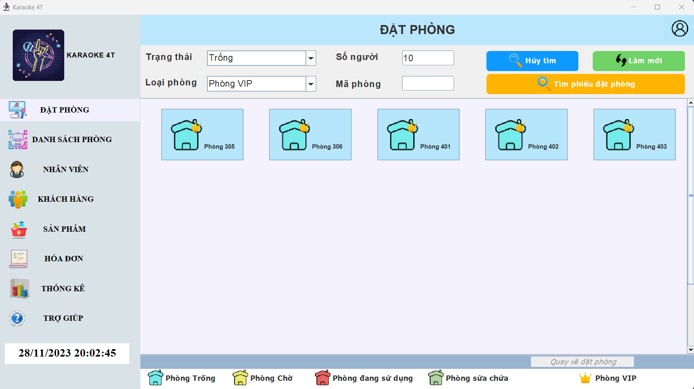
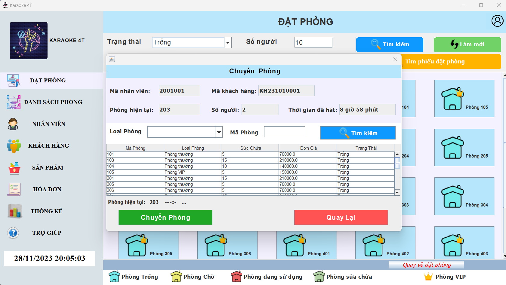
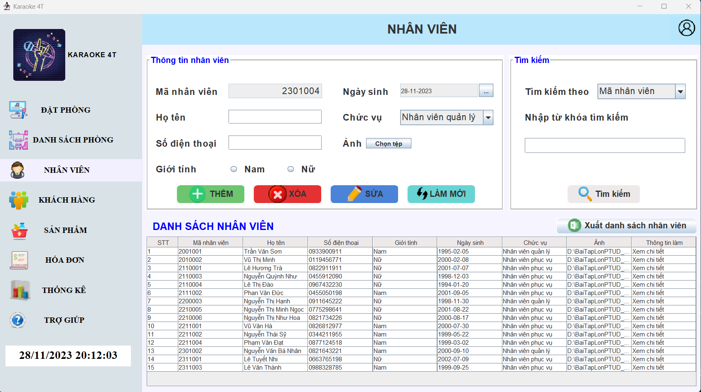

Hướng dẫn sử dụng phần mềm quản lý KARAOKE 4T
Lời giới thiệu chung
Phần mềm Quản lý cửa hàng Karaoke 4T là phần mềm hỗ trợ các dịch vụ như: Đặt phòng, chuyển phòng thêm dịch vụ,thanh toán hóa đơn cho khách hàng.Bên cạnh đó hỗ trợ chủ cửa hàng quản lý nhân viên,phòng hát,dịch vụ,hóa đơn một cách thuận tiện nhất.Phần mềm còn giúp tìm phiếu, thống kê các số liệu về doanh thu theo từng khoảng /mốc thời gian cụ thể một cách trực quan, chính xác nhất phục vụ cho việc kinh doanh
Các bước hướng dẫn sử dụng phần mềm:
Bước 1: Đăng nhập vào phần mềm
Mỗi nhân viên làm việc tại quán sẽ được cấp tên đăng nhập và mặt khẩu riêng. - Tên đăng nhập chính là mã của nhân viên - Mật khẩu là chuỗi ký tự bao gồm: Tên nhân viên + mã Nhân viên, như hình bên dưới mật khẩu là "Son2001001"
- Nếu 1 nhân viên bất kỳ họ bị quên mật khẩu, điều cần làm là họ sẽ phải click chuột vào mục quên mật khẩu ở trên giao diện đăng nhập - Khi nhấn xong một giao diện hiện lên yêu cầu nhân viên nhập số điện thoại của mình, hệ thống sẽ gửi mã OTP để xác nhận, nhân viên cần nhập đúng mã OTP và nhập đúng form của mật khẩu mới xác nhận đổi mật khẩu được.
Bước 2: Tổng quan về trang chủ
- Từ trang chủ của phần mềm có thể chọn các chức năng như: Đặt phòng, danh sách phòng, nhân viên, khách hàng, sản phẩm, khuyến mãi, hóa đơn, trọ giúp, tài khoản - Được thiết kế với bên phải là thanh sidebar chứa các chức năng chính của phần mềm, còn bên phải màn hình là nội dung của các chức năng đó
Bước 3: Các thao tác quản lý đặt phòng
- Giao diện đặt phòng sẽ có thanh tìm kiếm phòng ở trên, phía dưới là danh sách các phòng của quản với trạng thái cụ thể của nó: Màu xanh dương là phòng trống, màu xanh lá là phòng đang sửa chữa, màu đỏ là phòng đang được sử dụng, phòng vàng là phòng chờ. Các phòng vip có vương miện ký hiệu phân biệt - Được thiết kế với bên phải là thanh sidebar chứa các chức năng chính của phần mềm, còn bên phải màn hình là nội dung của các chức năng đó
Trước khi thao tác, chúng ta có thể tìm 1 phòng mà mình mong muốn bằng thanh tìm kiếm ở trên:
Bước 3.1: Thao tác đặt phòng trực tiếp tại cửa hàng:
- Chọn hoặc tìm một phòng trống bất kỳ mà bạn muốn đặt - một giao diện thông tin hiện lên, bao gồm các thông tin của phòng, nhập số người hát trước khi click chuột vào nút đặt phòng.
- Giao diện đặt phòng được mở lên, ở đây chúng ta sẽ kiểm tra khách hàng trước, nếu đã tồn tại thì SDT và giới tính của họ sẽ được tải lên, còn ngược lại chưa có Khách hàng, hệ thống sẽ hỏi và nếu xác nhận thì hệ thông sẽ nhảy đến giao diện khách hàng để tiến hành thêm khách hàng trước - Còn nếu khách hàng không cung cấp thông tin, bạn có thể chọn chức năng khách hàng mặc định, thông tin của khách hàng mặc định sẽ tự động tải lên đầy đủ.
+ Khi muốn đặt thêm phòng, bạn phải nhấn nút đặt thêm phòng, phần mềm sẽ trở về giao diện chính của đặt phòng và chọn 1 phòng khác để đặt thêm, phòng được thêm vào danh sách rồi thì sẽ không được đặt lại nữa (phòng bị tô đen) + Khi thêm đầy đủ phòng muốn đặt, bạn nhấn nút "quay lại đặt phòng", danh sách phòng đặt cũng như thông tin khách hàng, thông tin các phòng sẽ được tải lên đầy đủ
+ Khi muốn thêm dịch vụ cho phòng, bạn phải click chuột vào phòng ấy trong bảng, sau đó nhấn nút thêm dịch vụ, quy trình thêm dịch vụ sẽ giống bước 3.2.
+ Khi thêm xong, bạn có thể xóa dịch vụ, xóa phòng không vừa ý bằng các nút xóa trên giao diện. Cuối cùng nhấn nút Đặt phòng, thời gian hát sẽ bắt đầu tính từ lúc đó
Bước 3.2: Thao tác Thêm dịch vụ cho phòng:
- Nhấn chọn một phòng đang sử dụng muốn thêm dịch vụ, một giao diện thông tin hiện lên, bao gồm thông tin phòng, thông tin khách hàng, thời gian hát của khách hàng
- Nhấn vào chức năng thêm dịch vụ, khi đó giao diện thêm dịch vụ sẽ được hiển thị, bên trái màn hình là danh sách tất cả dịch vụ hiện tại của quán, bên phải là các dịch vụ đã đặt trước đó của phòng đang hát ấy - Nếu muốn thêm 1 dịch vụ, người dùng chỉ cần chọn dịch vụ đó, sau đó nhập số lượng và nhấn nút thêm, khi đó dịch vụ sẽ được cập nhật vào bảng danh sách bên phải. Tại đây chúng ta cũng có thể xóa các dịch vụ không cân thiết khi nhấn vào nút xóa phía góc phía trên bên phải
Bước 3.3: Thao tác Chuyển phòng:
- Nhấn chọn một phòng đang sử dụng muốn chuyển, một giao diện thông tin hiện lên, bao gồm thông tin phòng, thông tin khách hàng, thời gian hát của khách hàng
- Nhấn vào chức năng chuyển phòng, khi đó giao diện chuyển phòng sẽ hiện lên chứa danh sách các phòng đáp ứng đủ điều kiện (phòng đó là phòng trống, sức chứa không được bé hơn số lượng người hát) - Có thể tìm kiếm một phòng cụ thể muốn chuyển tới bằng thanh tìm kiếm phía trên, sau đó tiến hành chọn click chuột vào phòng đó trong bảng rồi nhấn chuyển phòng
Bước 3.4: Thao tác thanh toán hóa đơn:
- Nhấn chọn một phòng đang sử dụng muốn thanh toán, một giao diện thông tin hiện lên, bao gồm thông tin phòng, thông tin khách hàng, thời gian hát của khách hàng.
- Nhấn vào chức năng thanh toán, khi đó giao diện thanh toán sẽ được mở lên chứa tất cả thông tin về các phòng, dịch vụ mà khách hàng đã đặt. - Nhân viên/quản lý kiểm tra thông tin và phải nhập tiền khách đưa > thành tiền để tiến hành thanh toán, có thể chọn xuất hóa đơn khi cần.
Như hình trên có thể thấy phần mềm có thể thanh toán cùng lúc nhiều phòng, nhiều dịch vụ cho khách hàng.
+ Trước khi thanh toán, nếu có yêu cầu trả dich vụ bất kỳ, người dùng phải chọn 1 dòng dịch vụ trong bảng, sao đó nhấn nút trả dịch vụ, tiếp tục nhập số lượng trả và xác nhận
check vào ô xuất hóa đơn và nhấn thanh toán, hóa đơn sẽ được xuất ra theo kiểu PDF
Bước 3.5: Thao tác Đặt phòng chờ
- Chọn hoặc tìm một phòng trống bất kỳ mà bạn muốn đặt trước - một giao diện thông tin hiện lên, bao gồm các thông tin của phòng, nhập số người hát trước khi click chuột vào nút đặt phòng.
- Nhấn vào nút đặt phòng chờ. Giao diện đặt phòng chờ được mở lên, ở đây chúng ta sẽ kiểm tra khách hàng trước, nếu đã tồn tại thì SDT và giới tính của họ sẽ được tải lên, còn ngược lại chưa có Khách hàng, hệ thống sẽ hỏi và nếu xác nhận thì hệ thông sẽ nhảy đến giao diện khách hàng để tiến hành thêm khách hàng trước - Còn nếu khách hàng không cung cấp thông tin, bạn có thể chọn chức năng khách hàng mặc định, thông tin của khách hàng mặc định sẽ tự động tải lên đầy đủ. - Tiếp theo là chọn giờ nhận phòng theo yêu cầu khách hàng. Cuối cùng nhấn nút đặt phòng, phòng vừa đặt sẽ chuyển sang trạng thái chờ (màu vàng).
Bước 3.6: Thao tác Nhận/Hủy phòng chờ
- Người dùng click chuột vào phòng đang ở trạng thái chờ (màu vàng) để tiến hành nhận/hủy phòng + Nếu nhận được phản hồi từ khách hàng hoặc khách hàng không tới hát quá 1 giờ đồng hồ thì người dùng nhấn nút hủy, phòng đó sẽ trở về trạng thái trống đồng thời phiếu đặt phòng đó cũng bị xóa
+ Quy định nhận phòng: Chỉ được nhận phòng trước 30 phút và không được trễ quá 30 phút, nếu tới sớm hơn 30 phút hệ thống thông báo là chưa tới giờ nhận, nếu trễ quá 30 phút sẽ thông báo rằng phiếu đặt phòng đã hủy do quá giờ.
+ Ngược lại thông báo nhận phòng thành công và hiển thị lên giao diện đặt phòng. Cuối cùng nhấn nút đặt để hoàn tất xử lý
Bước 3.7: Thao tác tìm phiếu đặt phòng:
- Trên giao diện đặt phòng có nút tìm phiếu đặt phòng, nhấn vào đó chúng ta có thể xem tất cả các phiếu đặt phòng. - Chúng ta có thể chọn một phiếu, rồi nhận/hủy phiếu nếu phiếu đặt đó là phiếu đặt phòng trước, còn nếu là đặt trực tiếp ta có thể xem chi tiết phòng, khách hàng của phiếu đó.
Bước 4: Các thao tác quản lý phòng/Nhân viên/Khách hàng/Sản phẩm/Khuyến mãi
- Các giao diện này đều giống nhau về chức năng và cấu trúc. - Phía trên bao gồm khung chứa thông tin của một phòng, một nhân viên, một khách hàng, một sản phẩm hay một khuyến mãi bất kỳ và có 4 nút chức năng đó là: Thêm, xóa, sửa, làm mới. Bên phải khung thông tin là khung tìm kiếm tương ứng + Bạn cần nhập đủ và đúng thông tin khi thêm, muốn xóa hay sửa 1 thực thể bất kỳ bạn phải chọn một dòng trong bảng danh sách phía bên dưới - Phía dưới màn hình là danh sách tất cả phòng hoặc nhân viên, khách hàng, sản phẩm, khuyến mãi được tải lên từ cơ sở dữ liệu của phần mềm. Lèm theo đó là nút xuất danh sách có chức năng xuất ra file Excel chứa danh sách.
Bước 5: Các thao tác quản lý Hóa đơn
- Được thiết kế với phía trên màn hình là khung thông tin của một hóa đơn và kèm theo các chức năng: xóa, sửa, tương đối giống với 5 giao diện ở trên nhưng khác một điều là không có chức năng thêm hóa đơn vì bản bản chất thêm hóa đơn được thực hiện ở giao diện đặt phòng - Bên phải khung thông tin là khung tìm kiếm hóa đơn, bạn càn chọn tiêu chí và nhập đúng thông tin để có được hóa đơn muốn tìm - Phía dưới màn hình là danh sách tất cả các hóa đơn được tải lên từ cơ sở dữ liệu của phần mềm. Lèm theo đó là nút xuất danh sách có chức năng xuất ra file Excel chứa danh sách.
Bước 6: Các thao tác thống kê
- Giao diện thống kê được cấu trúc 3 phần: + Phía trên là các loại thống kê cùng với các nút chức năng, người quản lý có thể thống kê theo 2 loại là doanh thu và khách hàng, có 3 loại thời gian thống kê là ngày, tháng và năm + Phía dưới và góc bên trái là thông tin thống kê theo loại được chọn ở trên (sau khi ấn nút thống kê). + Phía dưới và góc bên phải là sơ đồ, biểu đồ biểu diễn sự biến thiên của các thông số thống kê, giúp người dùng có cái nhìn trực quan hơn. - Sau khi chọn loại thống kê và hiển thị được các thông tin thống kê, người dùng có thể in báo cáo thống kê ra để sử dụng.
Bước 7: Các thao tác trên giao diện trợ giúp
- Giao diện trợ giúp bao gồm các mục giới thiệu chung, các phía tắt, từ khóa, các tài liệu hướng dẫn trên web và Youtube. Bên phải là cây cấu trúc màn hình giúp người dùng có thể xem một cách tổng quan cấu trúc phần mềm, hơn nữa có thể nhấn vào để di chuyển dến nơi đó.
Giao diện tài khoản:
- Được mở bằng nút phía trên góc phải màn hình và có thể được mở từ bất cứ giao diện nào của phần mềm. Nó chứa thông tin chi tiết của nhân viên đang hoạt động - Người dùng có thể đăng xuất ra khỏi phần mềm ở đây bằng cách nhấn nút đăng xuất, khi đó sẽ quay lại màn hình đăng nhập lúc đầu

Phân quyền
- Người quản lý có thể thực hiện đầy đủ tất cả các chức năng của phần mềm
- Nhân viên chỉ có thể thực hiện các chức năng như: Đặt phòng, chuyển phòng, thêm dịch vụ, thanh toán, thống kê khách hàng. Ngoài ra không được thực hiện các chức năng khác